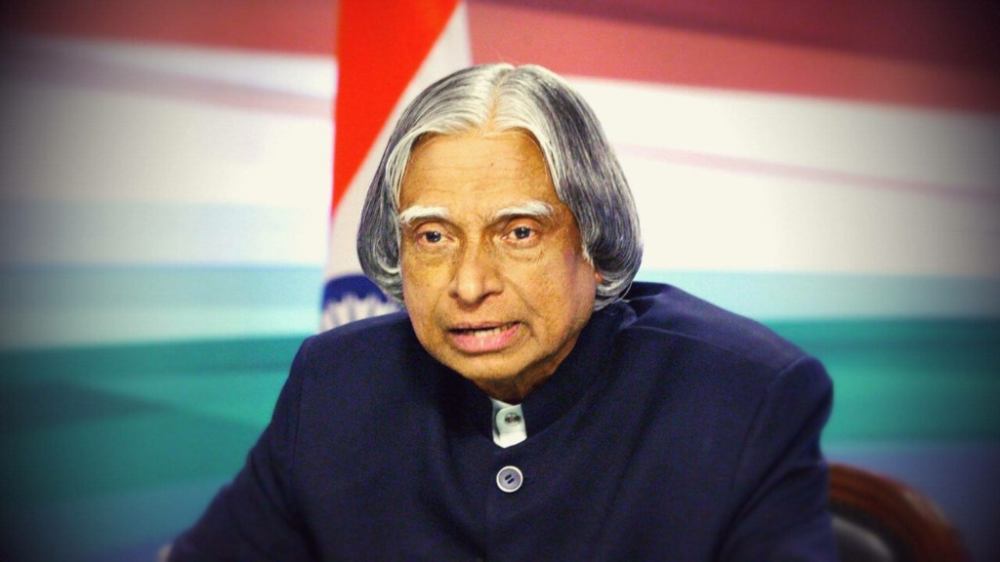

Dr. A. P. J.
Abdul Kalam
Scientist • Rocket Pioneer • Visionary • People's President
The architect of India's indigenous satellite launch vehicles and strategic defence deterrents. A visionary who propelled India into orbit and ignited the minds of millions to touch the stars.

THE MAN BEHIND THE DREAM
From the tranquil shores of Rameswaram to the forefront of India's aerospace revolution.
Early Roots & The Spark of Flight
Born on 15 October 1931 into a modest family in the coastal pilgrimage town of Rameswaram, Tamil Nadu, Avul Pakir Jainulabdeen Abdul Kalam discovered early that perseverance bridges humble beginnings and monumental destinies. Distributing newspapers in his boyhood to support his family's household, he nurtured an unquenchable fascination with the mechanics of avian flight and the boundless sky, which later guided him to study physics at St. Joseph's College, Tiruchirappalli, and specialize in Aeronautical Engineering at the Madras Institute of Technology (MIT).
Architect of India's Space Odyssey
Joining the Defence Research and Development Organisation (DRDO) and subsequently the Indian Space Research Organisation (ISRO) under the pioneering mentorship of Dr. Vikram Sarabhai, Dr. Kalam took the helm as the Project Director for India's premier Satellite Launch Vehicle, the SLV-III. In July 1980, against steep technical bottlenecks, his team achieved a watershed triumph by injecting the Rohini satellite into Earth orbit, firmly establishing India as an indigenous spacefaring nation and setting the technical benchmark for all subsequent launch vehicle architectures.
Strategic Self-Reliance & The People's President
Appointed as the Chief Executive of the Integrated Guided Missile Development Programme (IGMDP), he orchestrated the indigenous development of strategic defence shields including Agni and Prithvi, earning the affectionate national moniker "Missile Man of India." As Scientific Adviser to the Defence Minister and Secretary of DRDO, he spearheaded pivotal technological milestones. In 2002, he was elected with overwhelming national consensus as the 11th President of India, transforming the highest constitutional office into an energetic people's platform centered on inclusive governance, science diplomacy, and societal upliftment.
Eternal Teacher & Mentor of Millions
Beyond statecraft and rocketry, Dr. Kalam considered the title of "Teacher" to be his highest calling. Driven by an abiding conviction that youth represent the dynamo of civilizational advancement, he interacted directly with over five million young students across schools and universities worldwide. He championed 'India Vision 2020' and the PURA initiative to bridge rural-urban disparities through technology. True to his lifelong commitment to education, he delivered his final words of wisdom while lecturing students at IIM Shillong on 27 July 2015, leaving an immortal legacy that continues to ignite human ambition.
THE KALAM ROCKET FLEET
Explore the launch vehicles and missile deterrent systems masterminded under Dr. Kalam's direct scientific leadership.
Click to trigger historic July 18, 1980 launch sequence & orbit injection.
SLV-III (Satellite Launch Vehicle)
Project Director: Dr. A. P. J. Abdul Kalam
India's first experimental 4-stage solid propellant rocket. On 18 July 1980, it successfully launched the Rohini RS-1 satellite into orbit, establishing India as the 6th spacefaring nation.
- Height: 22.7 meters
- Stages: 4 Solid Stages
- Payload: Rohini RS-1 (35 kg)
- Historic Orbit: 305 × 919 km
ROHINI SATELLITE (RS-1)
Indigenous Orbital Satellite
Carried flight sensors and landmark imaging payloads to monitor the SLV-III 4th stage performance. Validated India's space tracking network and orbital telemetry stations.
- Mass: 35 kg
- Power: 16W Solar Array
- Mission: 15+ Months in Orbit
- Tracking: ISTRAC & SHAR
AGNI & PRITHVI MISSILE FLEET
Chief Executive: IGMDP (DRDO)
Indigenous strategic ballistic missile systems engineered under the Integrated Guided Missile Development Programme, securing India's technological autonomy and nuclear deterrence shield.
- Prithvi: Surface-to-Surface (150-350 km)
- Agni: Medium-to-Intercontinental Range
- Re-entry Tech: Carbon-Carbon Heat Shield
- Guidance: Inertial Navigation System
PSLV HERITAGE & EVOLUTION
The Workhorse of Modern ISRO
The solid booster and stage control technologies developed under Dr. Kalam's SLV-III program directly evolved into the PSLV rocket that launched Chandrayaan-1, Mangalyaan, and 104 satellites in one flight.
- Success Rate: 95%+ Over 55+ Missions
- Moon Mission: Chandrayaan-1 (2008)
- Mars Mission: Mangalyaan (2013)
- Heritage: SLV-III Solid Rocket Core
FROM DREAMS TO ORBIT
An orbital chronology tracking the pivotal milestones of India's space and scientific ascension.
Humble Beginnings in Rameswaram
EARLY LIFE & FOUNDATIONSBorn on October 15, 1931, in Rameswaram, Tamil Nadu. Nurturing a deep reverence for nature, physics, and flight, he learned early values of perseverance, simplicity, and interfaith harmony from his parents.
Aeronautical Mastery & DRDO Genesis
AEROSPACE ENGINEERINGGraduated with a degree in Aeronautical Engineering from MIT Chennai. Joined the Aeronautical Development Establishment of DRDO, designing a small hovercraft prototype before joining India's nascent space committee.
SLV-III & Historic Satellite Launch
ISRO SPACE PROGRAMMEAppointed as Project Director of India's first Satellite Launch Vehicle (SLV-III) at ISRO. On 18 July 1980, the SLV-III rocket successfully deployed the 35kg Rohini satellite into low Earth orbit, inaugurating India's space era.
Missile Programme & Scientific Leadership
DEFENCE SELF-RELIANCEChief executive of the Integrated Guided Missile Development Programme (IGMDP), bringing to fruition the Agni, Prithvi, Akash, and Trishul systems. Later served as Chief Scientific Adviser to the Prime Minister of India.
Conferment of the Bharat Ratna
HIGHEST NATIONAL HONOURAwarded the Bharat Ratna, India's highest civilian honor, in recognition of his monumental contributions to scientific research, space launch capability, and strategic defence modernization.
11th President of India ("People's President")
NATIONAL LEADERSHIPSworn in as the 11th President of the Republic of India. Celebrated for democratizing the Rashtrapati Bhavan, championing rural development (PURA), and inspiring millions of youth with his visionary roadmap 'India Vision 2020'.
Empowering Youth & The Final Lecture
ETERNAL TEACHERDedicated his post-presidency years entirely to teaching at IITs, IIMs, and universities across the world. On 27 July 2015, while lecturing at IIM Shillong on "Creating a Livable Planet Earth", he completed his earthly mission.
MISSION: INNOVATION
Pioneering scientific breakthroughs that propelled India into the global aerospace forefront.
SPACE RESEARCH
Pioneered indigenous sounding rocket experiments at the Thumba Equatorial Rocket Launching Station (TERLS). Collaborated with global space researchers, establishing foundational telemetry and payload recovery techniques for India.
LAUNCH VEHICLE DEVELOPMENT
Led the multi-disciplinary team as Project Director of SLV-III. Engineered indigenous solid propellant motors, stage separation mechanisms, and guidance systems that formed the genetic blueprint of PSLV and GSLV rocket families.
DEFENCE TECHNOLOGY
Conceptualized and directed the Integrated Guided Missile Development Programme (IGMDP). Developed indigenous strategic deterrents: Agni (intermediate range) and Prithvi (tactical surface-to-surface), plus Akash, Trishul, and Nag.
SCIENTIFIC LEADERSHIP
Served as Chief Scientific Adviser to the Prime Minister and Secretary of DRDO. Championed national technological self-reliance, high-performance computing, advanced composite materials, and critical dual-use technology missions.
NATIONAL SERVICE & HEALTHCARE
Applied aerospace materials to public healthcare, co-developing the affordable 'Kalam-Raju Stent' for cardiac patients and lightweight carbon-composite calipers for polio-affected children, reducing caliper weight by over 80%.
YOUTH & EDUCATION
Authored best-selling inspirational classics including Wings of Fire, Ignited Minds, and India 2020. Dedicated his energy to mentoring school students and university researchers, igniting curiosity across every corner of India.
Iconic Quote by Dr. Kalam
"Dream, dream, dream. Dreams transform into thoughts and thoughts result in action."
THE LEGACY CONTINUES
His earthly mission concluded, but the constellation of ideas he ignited continues to light humanity's path toward the stars.
Illuminating Generations of Explorers
Dr. Kalam proved that authentic leadership is grounded not in power, but in empowering others to think fearlessly. The institutional foundations he laid during the nascent decades of ISRO directly inspired India's monumental lunar and interplanetary milestones—from the historic landing of Chandrayaan-3 on the lunar south pole to the audacious horizon of the Gaganyaan crewed mission.
His philosophy lives on through hundreds of university innovation incubators, student satellite programs, and grassroots scientific societies across the globe. By showing that scientific integrity and deep human compassion can coexist in harmony, he remains India's eternal North Star for youth.
"You have to dream before your dreams can come true. Great dreams of great dreamers are always transcended."
"Do not wait for something to happen. Go out and make it happen. Courage is the foundation of all breakthrough innovation."
"When failure comes, take ownership. When success comes, give credit to your team. That is the essence of true leadership."
"Knowledge with integrity is the greatest superpower of a nation. Education must build character and cultivate scientific temper."
KEEP DREAMING. KEEP EXPLORING.
"Every generation has the opportunity to turn curiosity into discovery."